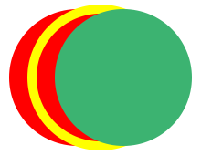

Primer svg
Segundo svg
Tercer svg
Cuarto svg
Quinto svg, superPuestos
Sexto svg, svg externo

Ej2
Ej3 (fill:#550000, fill:880000, fill:AA0000, fill:CC0000,fill:FF0000)
Ej4 (fill:#550000, fill:880000, fill:AA0000, fill:CC0000,fill:FF0000)